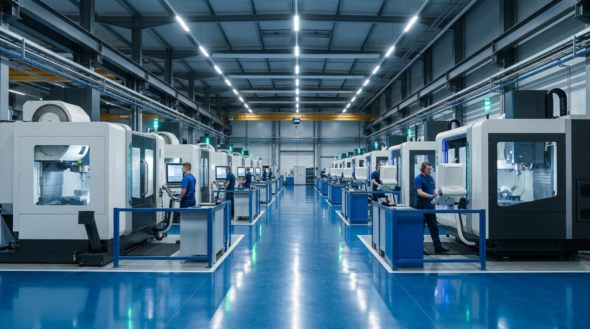
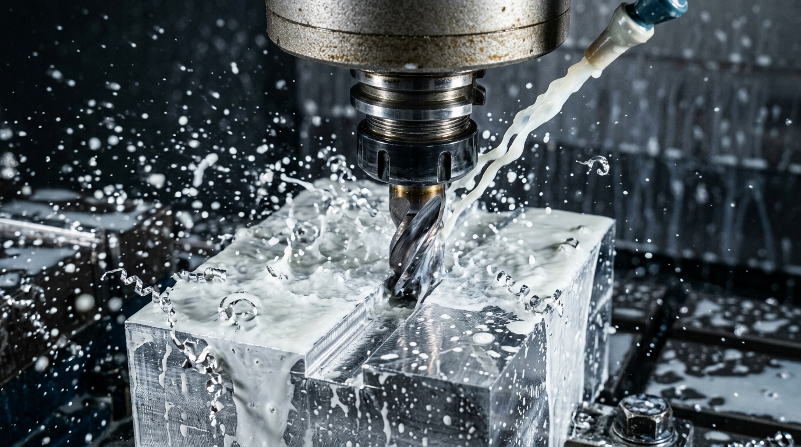
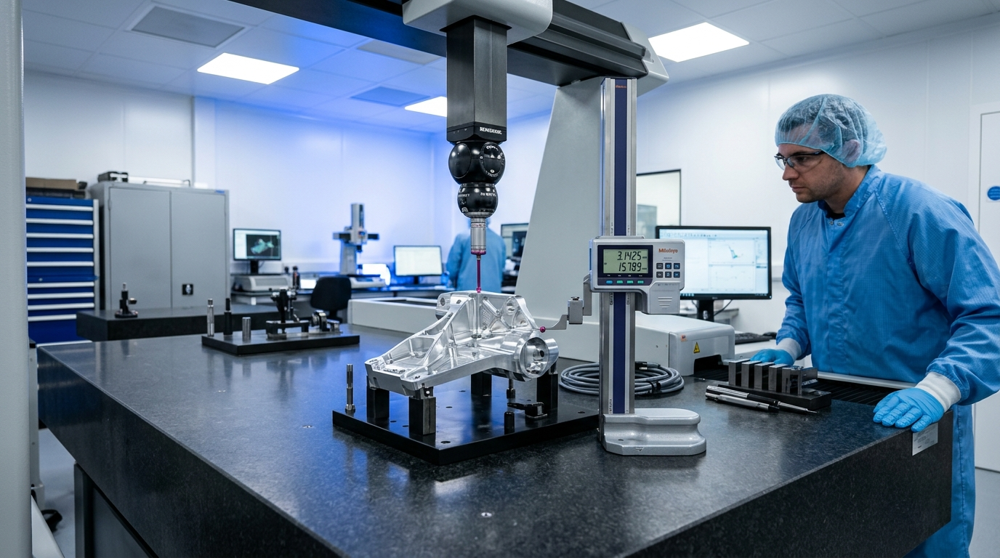

Precision Machining.
Engineered for Performance.
Ascent Engineering delivers precision CNC machining solutions through advanced multi-axis manufacturing capabilities, disciplined production processes and a commitment to dimensional quality.
Manufacturing Precision Through Advanced Technology
Ascent Engineering specializes in precision CNC machining and engineered component manufacturing. Our facility is equipped with 3-axis and 5-axis vertical machining capabilities, supporting complex geometries, precision milling and custom component requirements.
Located in the industrial corridor of Peenya, Bengaluru, our operations combine modern machine architecture with systematic engineering workflows. From conceptual design review through multi-axis cutter path execution, we machine critical parts to exact drawing specifications across aluminum alloys, steels, titanium, and engineering metals.
Multi-Axis Execution
Simultaneous 5-axis and 4th-axis rotary indexers for intricate contours.
Production Agility
Six 3-axis VMC lines configured for rapid parallel batch milling.
Dimensional Discipline
Granite table metrology with Mahr Digimar 2D linear height gauge.
Synchronized Tapping
Rigid tapping cycles ensuring precise thread pitch and depth consistency.

#240/P6 Industrial Area, Peenya 3rd Stage. Advanced precision machining facility.
Manufacturing Capabilities
Engineered machining solutions supporting complex multi-axis geometries, high-precision milling, and rigid threading operations.
Advanced Multiaxis
5-Axis CNC Machining
Complex component machining with multi-axis machining capabilities. Enables simultaneous milling of sculpted aerodynamic surfaces, turbine-style impellers, and contoured metallic geometry in single or minimal clamping setups.
3-Axis VMC Machining
Precision milling operations for engineered components. Equipped with high-rigidity spindles, stable clamping beds, and automated tool changers to handle batch production with consistent repeatability and tight tolerances.

Threading & TappingCNC Tapping Operations
Accurate thread machining and tapping operations. Rigid synchronized tapping cycles ensure uniform thread pitch, clean root clearance, and zero cross-threading across deep-hole and blind-hole configurations.
Verified Infrastructure Highlights
Our available machine capacity configured for precision aerospace, automotive, hydraulic, and custom engineering components.
5-Axis VMC
Dedicated multi-axis vertical machining center engineered for simultaneous complex profiling and contoured geometries.
3-Axis VMC Fleet
Six vertical machining centers installed in line to accommodate parallel batch milling and rapid turnaround jobs.
CNC Tapping Operations
Synchronized rigid thread tapping ensuring accurate pitch control and consistent internal threads across all batches.
Precision Metrology
Mahr Digimar 817 CLT 2D linear height gauge and surface parameter standards supporting verified inspection.
Precision Component Manufacturing
Machining of custom components based on engineering requirements across aerospace, defense, and precision mechanical applications.

Precision Cylindrical Avionics & Sensor Housings
Multi-axis turned and milled aerospace enclosure featuring precision side pocket bays, mounting flanges, and fine-pitch tapped hole matrices. Machined from solid aerospace-grade alloy with strict datum concentricity.

Multi-Bay Electronic Chassis Plates
Elongated thin-wall structural plates with deep pocket milling, isolation rib dividers, and high-density fastener patterns.

Precision Thermal Cold Plates
High-density micro-fin cooling plates with parallel channels and perimeter vacuum sealing lands.

Thin-Wall Lattice Baffle Structures
Intricate cellular cutouts and perforated metal shields engineered for lightweight structural rigidity.
Quality Begins with Measurement.
At Ascent Engineering, precision is governed by strict measurement protocols. Our quality inspection process emphasizes dimensional verification, surface roughness discipline, and repeatable accuracy from first article to final batch dispatch.

Disciplined Manufacturing Infrastructure
A clean, organized production floor located in Peenya 3rd Stage, Bangalore, built to support high-precision CNC milling and disciplined component production.
Stable Power Distribution
Dedicated industrial power infrastructure ensuring uninterrupted machine cycles.
Coolant & Thermal Control
High-flow filtration systems maintaining cutting temperature and surface integrity.
Disciplined Chip Evacuation
Continuous swarf extraction preventing re-cutting and protecting finished faces.
Staging & Traceability
Organized batch staging and protective packaging to safeguard delicate machined surfaces.
Why Ascent Engineering
We combine robust machine capacity, manufacturing discipline, and dependable customer collaboration to give engineering teams complete confidence in their precision components.
Advanced CNC Infrastructure
Equipped with vertical machining centers featuring modern CNC controllers and high-rigidity structures for dependable repeatable performance.
Multi-Axis Machining Capability
Dedicated 5-axis capability and 4th-axis rotary indexers to manufacture intricate geometry, aerofoils, and compound angles with minimal setups.
Precision Component Manufacturing
From engineering drawings to finished metallic parts, supporting aerospace, automotive, hydraulic, and automation applications.
Quality-Focused Operations
Structured dimensional inspection utilizing Mahr 2D linear height measurement and calibrated tools on granite reference benches.
Custom Machining Requirements
Flexible production agility supporting quick-turn prototypes, pre-production trial lots, and continuous batch manufacturing.
Dedicated Manufacturing Facility
Conveniently situated in Peenya 3rd Stage, Bengaluru's premier industrial corridor, providing direct engineering accessibility.